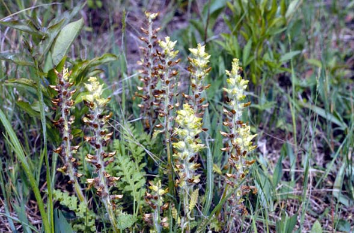
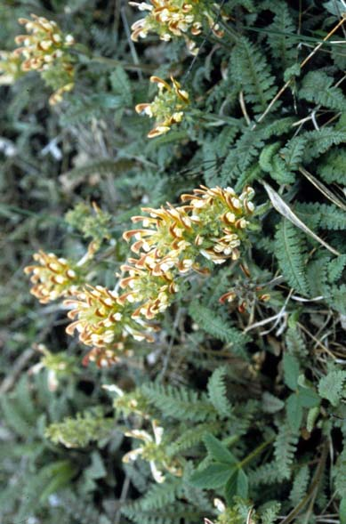
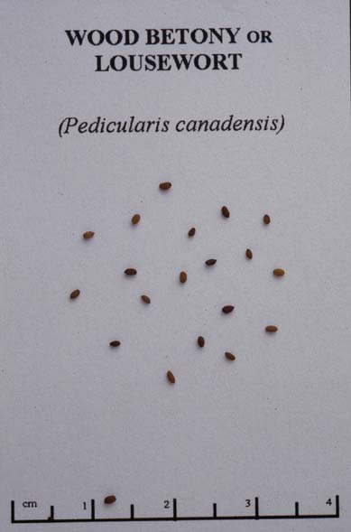

Pedicularis canadensis
Family: Scrophulariaceae
Wood Betony/Lousewort
Swink/Wilhelm #9


FLOWERING: Mid-April to Mid-June
SEED TIMING: Mid-May through June
HABITAT: Dry woods and dry to wet prairies.
DIAGNOSTIC FEATURES: 6 - 14 inches high. A low hairy plant topped by a broad whorl of tubular, hooded flowers, yellow, red or both. The long soft hairy leaves, many of them basal, are deeply incised and toothed, almost fernlike in appearance.
TO PICK: Plants can be found in bloom and seed at the same time. The flower blooms from the bottom up. Seeds are ripe when the pods turn brown. Ideally, it is best to wait until the bottom pods have dropped their seeds to the ground before picking only the top pods. The individual pods open at the top and seeds spill out easily. It is all right to scatter a few seeds around as you are picking; this plant doesn't spread far on its own.